圖示物品名特殊效果取得方式
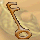 舊鑰匙新手第一個村長任務物品任務取得 ( 市鎮中心 )
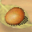 幻獸蛋對著它點右鍵，你的新手寵就出來啦 !!任務取得 ( 城鎮地下室 )
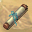 火急送信捲軸點右鍵可知村長要你去找誰接村長任務
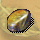 神秘礦石打指定的幻獸隨機取得接神殿任務
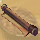 某某捲軸跟捲軸的任務物品許多有捲軸任務都是此圖
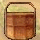 給某人的物品跟送東西有關的任務物品許多送東西任務都是此圖
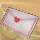 給某人的信件跟送信有關的任務物品許多送信任務都是此圖
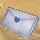 給某人的信件 2跟送信有關的任務物品許多送信任務都是此圖
給某人的禮物跟禮物有關的任務物品許多禮物任務都是此圖
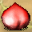 大桃子幸福的桃子任務物品龍窟B3打倒霸王龍
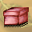 潘朵拉的盒子潘朵拉的盒子任務物品不知名迷宮打倒那個人
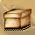 天然海藻泥美伊戰爭任務物品西綠野打倒邪惡禿鷹王
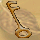 蛙之鑰神秘的寶箱任務物品神秘洞窟打倒蛙魂
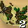 怪怪的衣服十一件衣服任務物品陰暗山洞第三區打倒惡靈
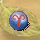 小羊封印石救出小羊們任務物品大野狼洞窟打怪隨機掉落
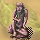 女神雕像卡邦十三任務物品害怕峽谷打怪盜羅賓
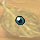 青蛙眼睛神秘藥水任務物品青蛙沼澤打樹蛙
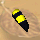 蜘蛛腳神秘藥水任務物品神燈沙漠打黑寡婦
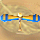 天空獸螺旋槳神秘藥水任務物品水晶山打黃金雲
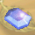 卡芬妮的水晶卡芬妮的失落任務物品木偶山打怪隨機掉落
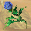 玫瑰心情伊芙的等待任務物品玫瑰湖打怪隨機掉落
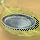 舊銀盤舊銀盤任務物品豌豆湖打游泳猴
 忘憂草失眠的毛爾任務物品沉睡湖隨機打幻獸取得
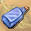 波里之水愛情顧問 II 任務物品金銀湖打加油波里
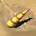 獨角獸的角會下金雞蛋的雞任務物品天鵝湖打獨角獸
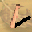 玩偶的鼻子會下金雞蛋的雞任務物品糖果山打金屬玩偶
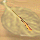 金獅子的鬍鬚 | | | | | | | | | | | | | | | | | | | | | | | | | | | | | | | | | | | | | | | | | | | | | | | | | | | | | | | | | | | | | | | | | | | | | | | | | | | | | | | | | | | | | | | | | | | | | | | | | | | | | | | | | | | | | | | 


 >>>
>>>